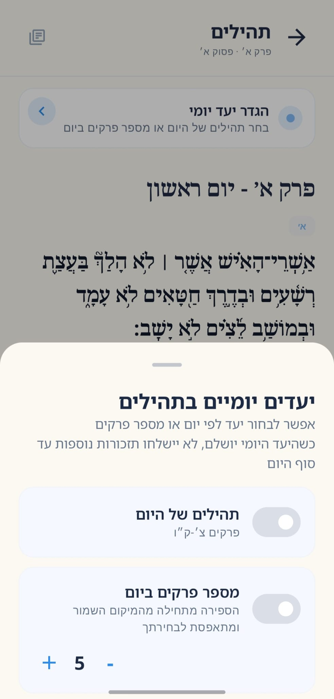

1
בוחרים את רגעי ההסחה
מסמנים אפליקציות שבהן קל לאבד זמן, כמו רשתות חברתיות או וידאו, ורגע תורה יודעת מתי להזכיר בעדינות.
אפליקציה שמחזירה אותך לרגע קצר של תורה בדיוק כשעמדת להיסחף לאפליקציה אחרת. בוחרים אילו אפליקציות יפעילו תזכורת, מגדירים יעד יומי, וממשיכים מהמקום האחרון שנשמר בלימוד.


הרעיון
רגע תורה בנויה סביב קביעות עתים בתוך החיים הדיגיטליים עצמם. במקום להילחם בהרגל פתיחת האפליקציות, היא משתמשת ברגע הזה כסימן קטן לעצירה וללימוד.
מסמנים אפליקציות שבהן קל לאבד זמן, כמו רשתות חברתיות או וידאו, ורגע תורה יודעת מתי להזכיר בעדינות.
פתיחת אפליקציה נבחרת יכולה להפעיל התראה שמציעה לעצור לרגע, בלי חסימות אגרסיביות ובלי עומס מיותר.
לחיצה על ההתראה מחזירה למסלול הלימוד המועדף ולמיקום שנשמר, כך שגם רגע קצר יכול להרגיש רציף.
החוויה
האפליקציה לא מנסה להיות ספרייה עמוסה. היא מציעה לימוד קצר במגוון נושאים, מאפשרת להגדיר יעדים יומיים ריאלים, לשמור את המקום שבו עצרתם, ולחזור לחיים עם תחושת רצף.

מה אפשר ללמוד
כל מסלול נפתח ללימוד ושומר את המיקום בנפרד, כדי שאפשר יהיה לבנות התקדמות משמעותית לאורך זמן גם מלימודים קצרים.
קריאת פרשה ופסוקים עם פרשנים כמו רש״י ואונקלוס.
פרקים קצרים ונגישים שמתאימים במיוחד לעצירה יומית.
לימוד דף יומי עם פירוש מקיף וברור.
הלכה בהירה ומסודרת לפרקי לימוד מדודים.
לימוד מוסר הדרגתי עם חזרה נוחה למיקום האחרון.
איך מתחילים
רגע תורה משתמשת בהרשאת Usage Access ב-Android כדי לזהות פתיחה של אפליקציות שבחרת. לצד זה אפשר להגדיר יעד יומי במסלול הלימוד, כך שהתזכורת מובילה להתקדמות עקבית ולא רק לפתיחה כללית של טקסט.
חומש, תהילים, גמרא, הלכה או מוסר.
בחר יעד לפי יום או מספר פרקים במסלולים התומכים בכך.
ההתראה מובילה למסלול, למיקום האחרון או ליעד היומי שלך.
פרטיות
רגע תורה נבנית כיישום מקומי, ללא צורך ביצירת חשבון וללא שיתוף נתונים מהמכשיר שלך. הרשאת השימוש מוסברת לפני ההפעלה וניתנת לכיבוי.
הניטור מופעל רק אחרי בחירת אפליקציות ואישור ההסבר בתוך האפליקציה.
העדפות ומיקומי לימוד נשמרים על המכשיר, כדי שהחוויה תישאר פשוטה ופרטית.
אפשר לעצור את המעקב, לשנות אפליקציות נבחרות, או לקרוא את מדיניות הפרטיות המלאה.
שאלות נפוצות
תשובות קצרות לשאלות שיכולות לעלות לפני שמתחילים להשתמש באפליקציה, במיוחד סביב לימוד תורה יומי, יעדים, תזכורות, פרטיות ומסלולי הלימוד.
רגע תורה היא אפליקציה ללימוד תורה קצר ועקבי, שמחזירה אותך למסלול לימוד בזמן רגעי הסחת דעת ושומרת את המקום שבו עצרת.
האפליקציה כוללת חומש עם רש״י ואונקלוס, תהילים, גמרא עם שטיינזלץ, פניני הלכה ומסילת ישרים.
בוחרים אפליקציות שיפעילו תזכורת ומגדירים יעד יומי במסלול הלימוד. ההתראה יכולה להוביל למיקום האחרון או ליעד היומי.
לא. רגע תורה נבנית כחוויה מקומית ללא חשבונות, והעדפות הלימוד והמיקומים נשמרים על המכשיר.
רגע תורה זמינה לשימוש ב-Android ומתפתחת סביב הרגלי לימוד אמיתיים: תזכורות בזמן הנכון, יעדים יומיים, ושמירת מיקום במסלולים קבועים.